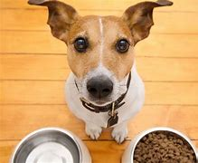

Los alimentos naturales que un perro puede consumir y ser, de hecho, beneficiosos para su salud son: carne, ya sea blanca o roja, se supone que debe ser la base de su dieta; hidratos de carbono, presentes en, por ejemplo, el arroz u otros cereales, pueden ser complementos en la dieta del can.